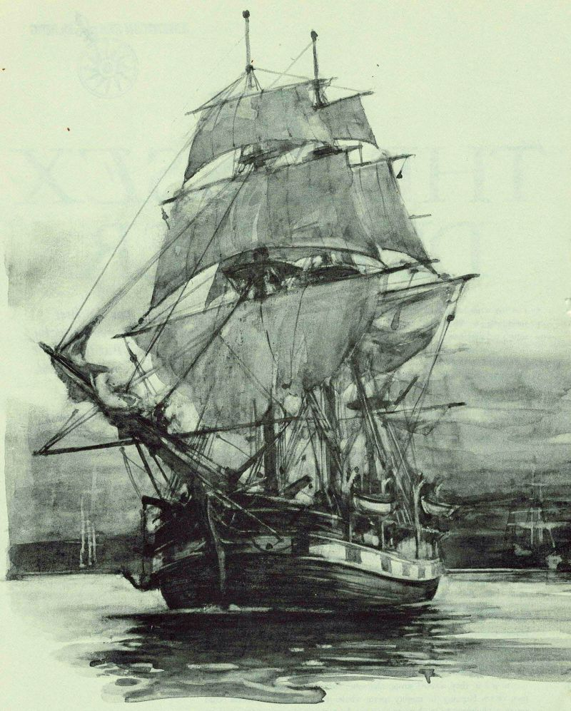
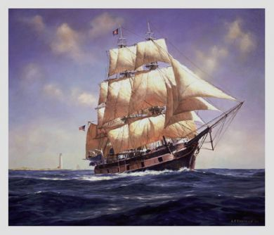
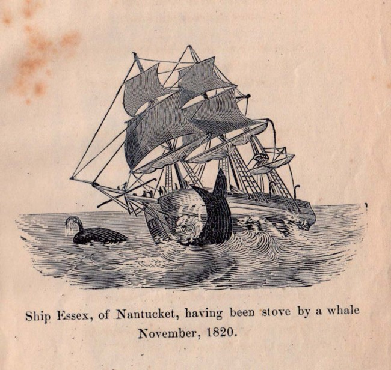
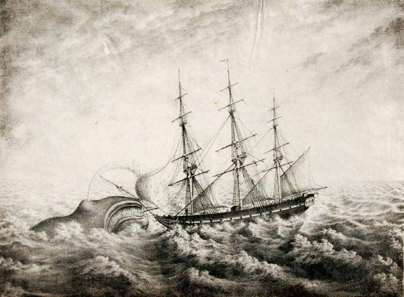
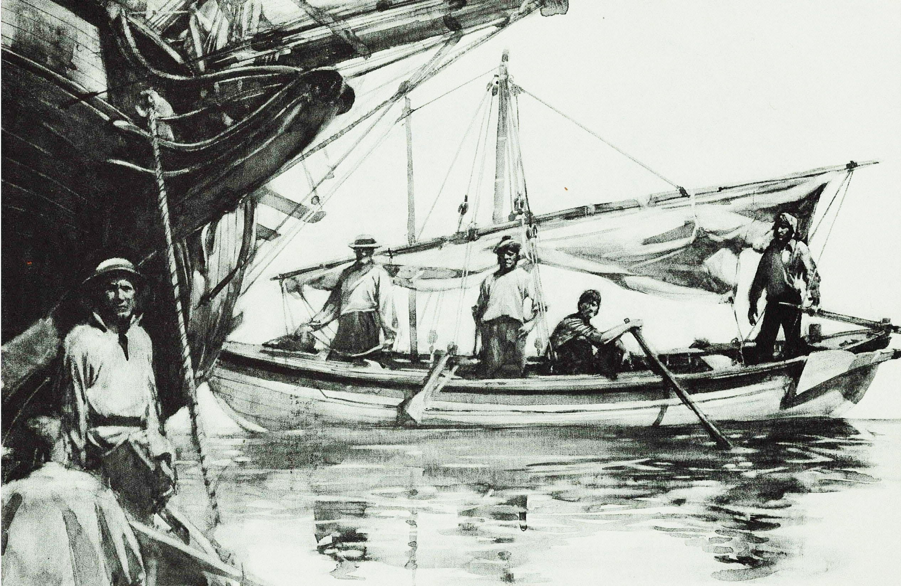

Tale of a Whale
by name name name name name
Setting Off on Course
The Essex shipwreck is one of history's most infamous shipwrecks, inspiring the classic
novel Moby Dick by Herman Melville. The Essex was an American whaling considered a lucky
vessel for its time as although whale hunting was popular, it was also recognized as a dangerous
ordeal. Setting sail on its final journey on August 12, 1819, with a crew of 21 men, including the
ship's first-time captain, George Pollard, Jr. The ship would head out from Nantucket to the
South Pacific Ocean and stay afloat for three years until the inevitable incident of a sperm whale
rearing onto the ship on November 20, 1820.
Omen or a Second Chance?

As soon as the voyage started, there was an incident that almost upended the entire journey. One August 14, two days after setting sail, the ship was briefly knocked onto its side by a squall and almost sunk. With the Essex damaged and missing two whaleboats, Pollard initially opted to return to Nantucket. However, First Mate Owen Chase worried that the men would believe the incident to be a bad omen and might desert. Thus, he convinced Pollard to continue and the ship set out once again. Whether it be an omen or a coincidence, had the men returned on that fateful day, history would have had different plans for them.
The Voyage of the Essex

The Essex spotted its first whale south of Rio de Janeiro, two months into their voyage,
and caught their first quarry. Afterwards, in January 1820 the Essex rounded Cape Horn,
southern Chile, and entered the South Pacific. The crew was disappointed for some time in their
search until they reached the waters off Peru, where they caught and killed more than 10 whales. Around late May of 1820, Pollard decided to head farther from the coast, into a distant area that
recently proved highly advantageous for whale hunters. To prepare for this trip, the Essex stopped at Atacames, Ecuador, in September 1820, to repair, and lost one of the crewmen who
deserted the ship. With one less member, the ship sailed on, stopping at Hood Island, Galapagos,
where they fixed a leak on the Essex and caught nearly 200 tortoises. In late October 1820, they
reached Charles Island and collected more tortoises before one of the crew members started a fire that soon spead throughout the small island, causing the men to flee.
The Fateful Day

After destroying the natural habitat of an island, the men boarded their ship and
continued on their journey. By November 20, 1820, they were more than 1,500 nautical miles
(2,800 km) from the Galapagos. Whales were spotted nearby and three whaleboats were released
into the waters. The vessel commanded by Chase was damaged, however, and was forced to
return to the Essex. As the boat was being repaired, the ship spotted a huge male sperm whale
near the ship. The whale was estimated to be 85 feet (26 meters) long; a typical male sperm
whale was no bigger than 65 feet (20 meters).
Why did the Whale Ram the Ship?

In a moment that would go down in history, the whale began racing toward the Essex,
ramming the port (left) side. After its initial attack, the animal resurfaced from under the water
and appeared dazed. Nevertheless, it resumed its attack “with tenfold fury and vengeance,”
striking the bow and causing disastrous damage to the ship before eventually disappearing. Why did the whale attack the Essex? Several guesses have been made with a popular theory that the hammering on the whaleboat sounded similar to the clicks made by whales to communicate.
With this theory, it is believed the agitated whale believed that the boat was actually another
male that had entered his territory and the whale was on defense. Either way, at this moment, the
whale defended itself and turned from prey to predator
The Aftermath and Continuing Tragedies

All 20 of the ship's crew survived the gruesome ordeal, but only 8 would live to tell the
tale as the crew's journey back home was another tragedy in itself. With the remaining three
whaleboats, the crew set out with limited provisions and each boat was headed by one of the
higher ranks; Pollard, Chase, and Joy. The months grew dreary as they encountered both harsh
weather and wind and although hope lingered in their hearts at first, it would later dwindle as
well. Madness grew rampant in their minds as their distress grew and eventually, the members of
the crew succumbed to cannibalism. On Pollard's boat, the men decided to draw lots to see who
would be killed and eaten and it was Pollard's cousin Owen Coffin who pulled the shortest straw.
Pollard offered to take his place, but the teenager refused and he was shot on February 6. Only
17 days later, on February 23rd, the boat was rescued by the Dauphin, another American whaling
ship.
The Survivors and What They Live To Tell
.jpg)
Chase, the man who urged the ship to sail on, would be one of the surviving crewmen as
all those rescued at sea were taken to Valparaíso, Chile, where they were reunited. After
returning to his home in Nantucket, Chase wrote his account in Narrative of the Most
Extraordinary and Distressing Shipwreck of the Whale-ship Essex, originally published in 1821.
It would be Chase's book that would inspire the writing of Moby Dick, some thirty years later, by
Herman Merville, immortalizing the event in history when a whale who was sought as prey
turned predator and capsized the Essex.
Works Cited
Tikkanen, Amy. "Essex." Encyclopedia Britannica, www.britannica.com/topic/Essex-
whaling-ship. Accessed 28 Apr. 2023.
Tragedy of the Whaleship Essex, education.nationalgeographic.org/resource/tragedy
-whaleship-essex/. Accessed 28 Apr. 2023.